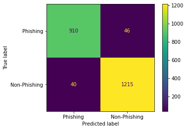

Artificial Intelligence Project: Detecting Phishing Websites
For the "Introduction to Artificial Intelligence" module at City University, I undertook a coursework project with a team of 3 others. We implemented several machine learning models using scikit-learn in Python and evaluated their effectiveness in a problem domain of our choice.
Our team chose a classification problem: predicting whether a given website was a phishing site or legitimate.
For this, we trained 6 different models with a fraction of a dataset of 11055 datapoints. Each row described 30 characteristics of a website (mainly of its URL). Once trained, the models each tried to predict whether the rest of the datapoints were classed as "phishing" or not. We then produced confusion matrices and calculated their accuracy in order to evaluate them.
I contributed to this project by:
- Proposing the dataset to the team.
- Performing dataset exploration techniques.
- Implementing the Decision Tree and Naive Bayes models.
- Adding my observations to our final report.
Below are some of the confusion matrices that were produced as part of my work. Each one has predicted 2211 data points.
Decision Tree Model
Accuracy of 0.963 {kind=link}
Bernoulli Naive Bayes Model
Accuracy of 0.904{kind=link}
You can read our final report here.
Check out the code on Github here.